I would say this is the first major robotics project that I worked on. I wanted to challenge myself and create the most advanced robotic gripper.
This project started off fairly simple where I wanted to create a tri-finger robotic gripper with a rotating base to adjust positioning of the fingers.
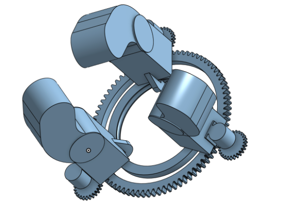 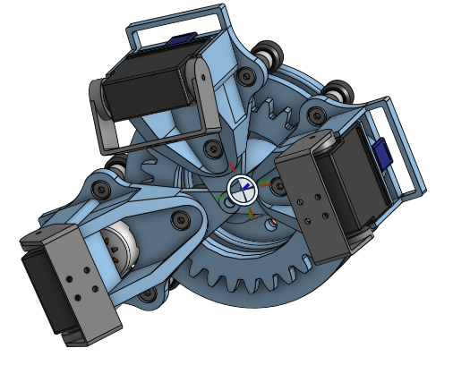It was a fairly simple design, 2 degrees of freedom per finger, though I felt that it wasn't dexterous enough, and I began to experiment around with designs.
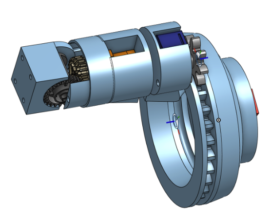This design had 3 degrees of freedom per finger where the tip of the finger would be able to rotate for adjusted gripping. This design was good, but the current Cad model lacked elegance, and I felt the need to fix it up.
While working on the fixing, I think I got a spurt of ambition, and I decided that I would try to make the most dexterous gripper possible. I wanted the gripper to be able to rotate, shift, and do other things. Eventually, I settled on a 5-degree of freedom per finger design. The gripper will be mounted on a Panda's Arm.
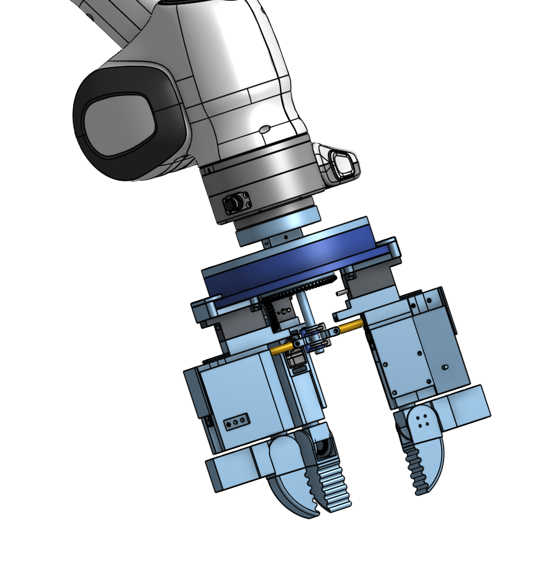After various 3D printed tests and minor modifications, the design was complete, here is what the final Cad looks like.
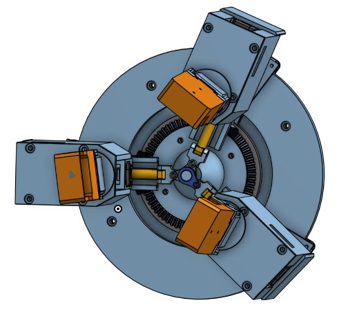 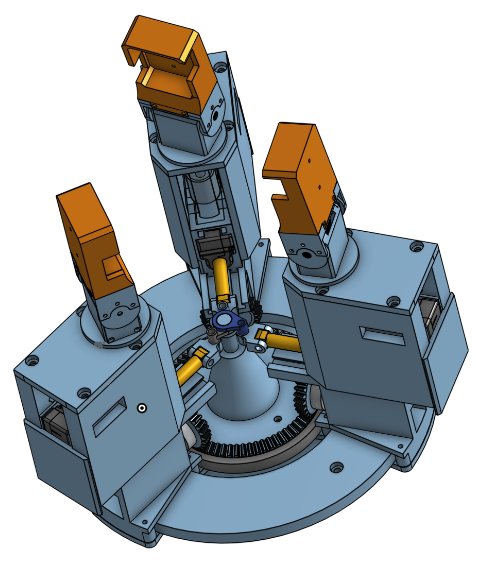Below are all the motions that are contained in a single finger.
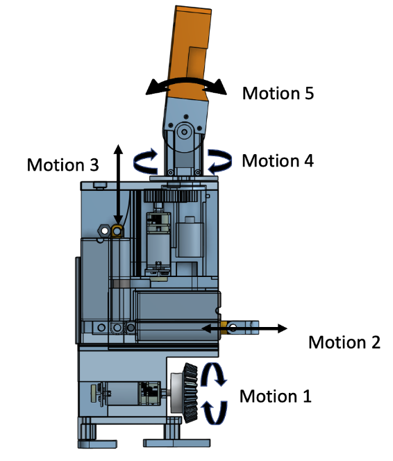I would say the hardest part of designing the hardware as motion 4 + motion 5. I wanted to ensure that both would be able to work without worrying about tangling wires. After learning about a Slipring from a friend and various design iterations, I was able to come up with a solution that will fulfill these requirements.
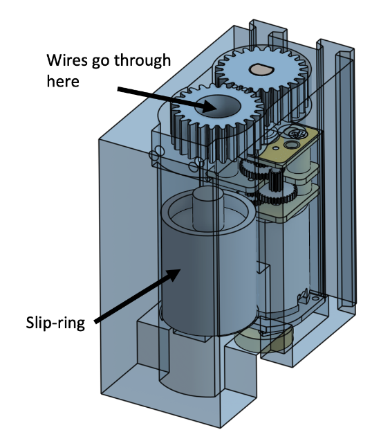With the Design Done, it was time for assembly. Here is what the gripper looks like fully assembled.
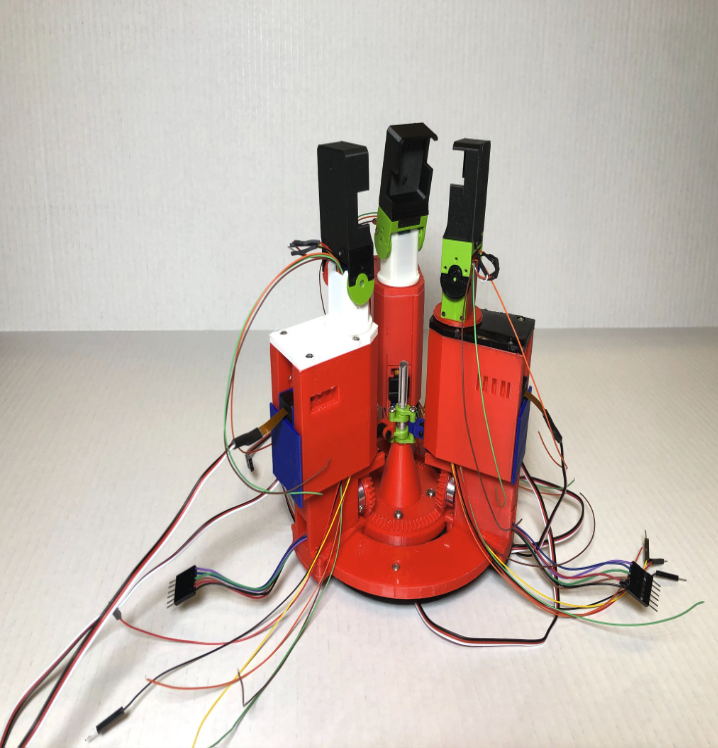 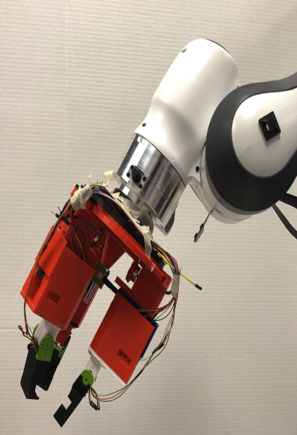I would say this part was the biggest learning experience for me. I had to wire 15 motors where I have a mix between servos and DCs. Though back then, I was not familiar with DC motors with Hall sensors and didn't know beforehand they would require a motor driver to operate. Once I figured out how to do the controlled movement, I also had to figure out how to have synchronous movement from one Arduino Mega. Though in the end I was able to figure it out. Below is the planned wiring diagram.
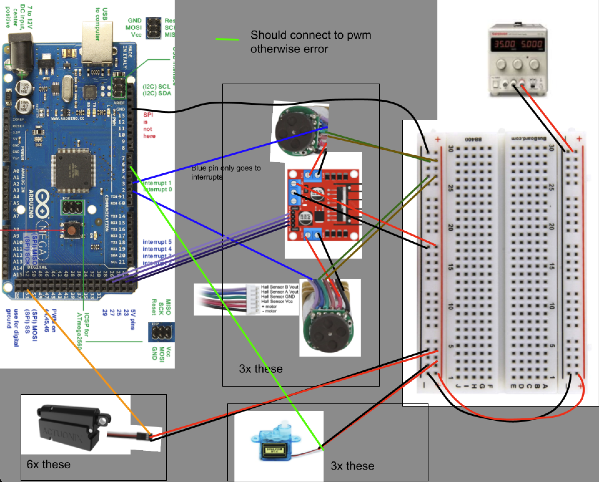Wiring this was messy, but manageable.
Here are some test videos. I was unable to test every single motion due to faulty electronics.
Socials